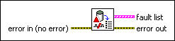
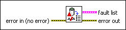

Get Fault List VI
Owning Palette: Faults VIs
Requires: Base Development System (Real-Time, Windows)
Returns a list of active faults.

 Add to the block diagram Add to the block diagram |
 Find on the palette Find on the palette |
Owning Palette: Faults VIs
Requires: Base Development System (Real-Time, Windows)
Returns a list of active faults.

| Add to the block diagram |
Find on the palette |
 |
error in describes error conditions that occur before this node runs. This input provides standard error in functionality. | ||||||||
 |
fault list contains the list of active faults.
| ||||||||
 |
error out contains error information. This output provides standard error out functionality. |
This VI allocates memory and can affect the determinism of the application. This VI must run on a target with the NI Scan Engine installed.
To obtain the fault list of a remote target from a host computer, you can use the DataSocket Read VI to subscribe to the following URL:
psp:\\<target IP address>\NI_SystemState\ControllerStatus\FaultList
The data type returned by the URL above is identical to that of the fault list output terminal of this VI.
You also can determine whether a fault is present on a remote target from a host computer by using the DataSocket Read VI to subscribe to the following URL:
psp:\\<target IP address>\NI_SystemState\ControllerStatus\FaultPresent
The data type returned by the URL above is Boolean.
Refer to the Scan Engine.lvproj in the labview\examples\Scan Engine directory for an example of using the Get Fault List VI.
 Open example Find related examples
Open example Find related examples